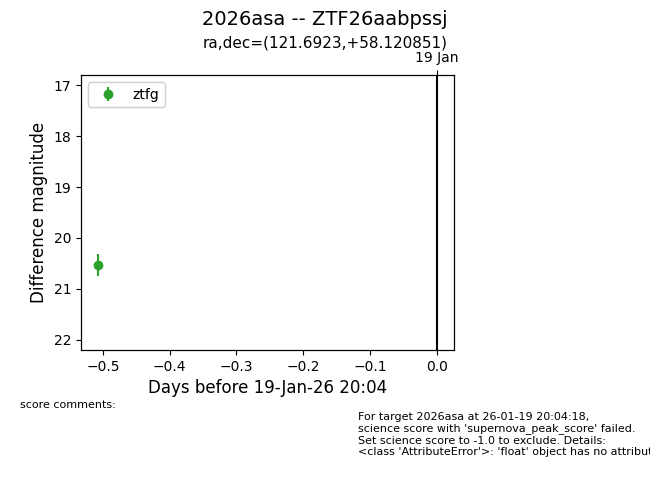
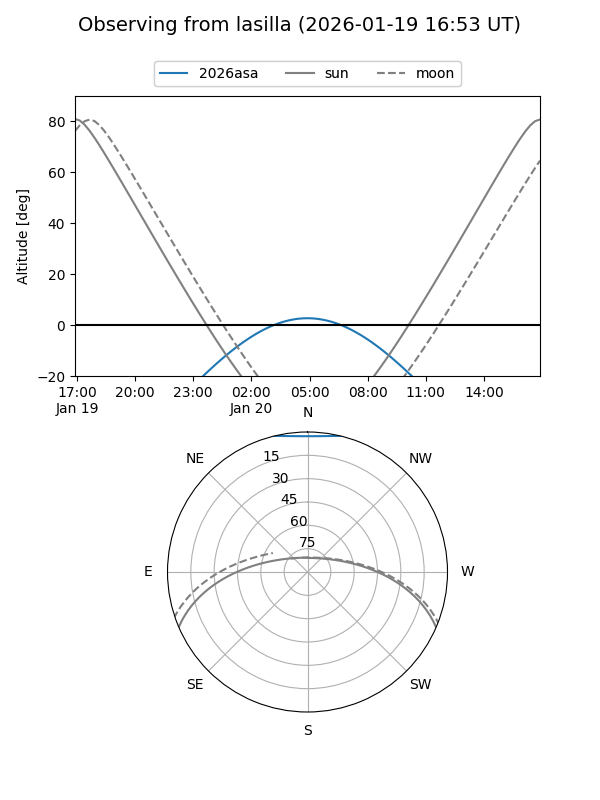
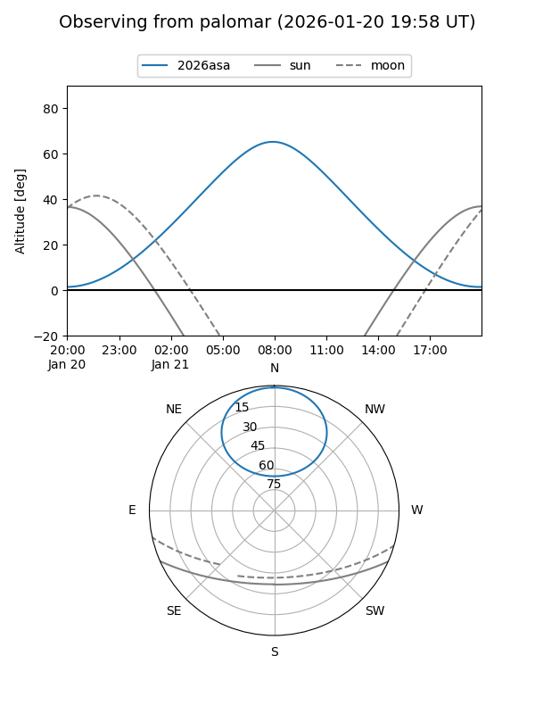
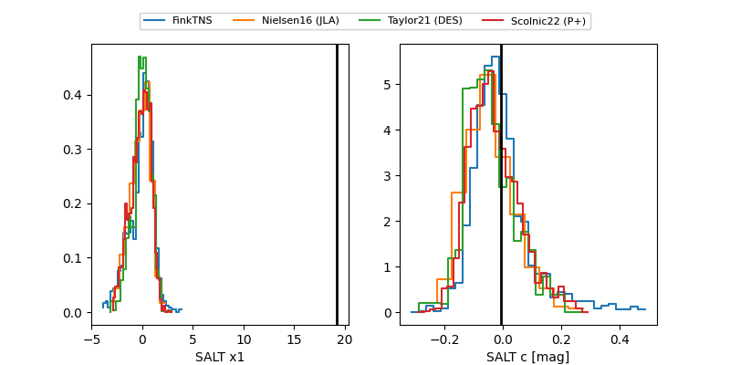

2026asa
Target 2026asa at 2026-01-21 09:06
Aliases and brokers:
FINK: link
Lasair: link
ALeRCE: link
TNS: link
YSE: link
alt names
ZTF26aabpssj (ztf,fink_ztf)
2026asa (tns,yse)
Coordinates:
equatorial (ra, dec) = 121.6923,+58.12085
equatorial (HMS+DMS) = 08:06:46.16,+58:07:15.06
galactic (l, b) = (159.3311,+32.61112)
Flags:
Photometry:
last ztfg=20.54
1 ztfg detections
Lightcurve

Visibility


Additional plots
